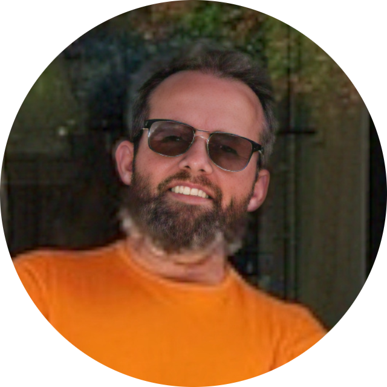
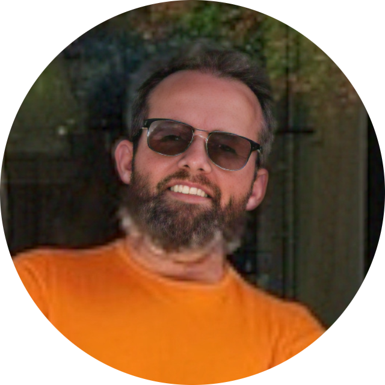

I am a versatile Web Developer and Senior Support Engineer with a strong background in building, deploying, and maintaining modern web applications. My experience spans HTML, CSS, JavaScript, and responsive design, combined with DevOps expertise in Docker, container orchestration, CI/CD workflows, and cloud platforms. I have a proven history of resolving complex technical issues, optimizing system performance, and delivering exceptional customer experiences in high-demand environments. My project portfolio includes developing interactive front-end interfaces, creating multi-stage Docker builds, and deploying applications to scalable cloud infrastructure. I bring a unique blend of development proficiency, operational insight, and customer-focused problem solving to every project I take on.
- 🐧Linux Administration (CentOS, Ubuntu)
- ☁️Cloud Platforms (Azure, AWS basics)
- 📦Container Technologies (Docker, Docker Compose, Kubernetes)
- 🌐Web Development (HTML, CSS, JavaScript, React)
- 🗂️Version Control (Git, GitHub)
- 🔄Data Migration & Disaster Recovery
- 🏢Active Directory, IIS, SharePoint
- 🔌API Integration & Troubleshooting
Senior Support Engineer | OpenText
09-2021 – Present
- Provide expert-level enterprise support with DoubleTake software for Linux, focusing on disaster recovery, migrations, and high availability.
- Train new hires and existing team members globally on DoubleTake.
- Lead complex Linux migration projects with minimal downtime.
- Work with development teams using Jira to track and manage escalations.
- Migrate mission-critical servers in bare-metal and hypervisor environments (VMware, Scale, Hyper-V).
- Implement strategies to enhance system availability.
- Collaborate across teams to troubleshoot and resolve critical issues, meeting SLA targets.
Senior Support Engineer, API & Integrations | Genesys
09-2020 – 09-2021
- Integrated telephony systems with third-party apps and services.
- Provided guidance on using and implementing Genesys APIs.
- Worked with Postman and Sumo Logic to tailor telephony solutions.
- Collaborated with dev and product teams to resolve complex issues.
- Communicated technical concepts to non-technical stakeholders.
Senior Level 3 Support Engineer | Exacq Technologies
06-2012 – 09-2020
- Supported physical DVRs on Linux, ensuring performance and reliability.
- Handled complex storage challenges: drive management, RAID, filesystems.
- Worked with engineering to improve product capabilities.
- Trained junior team members in DVR and Linux storage troubleshooting.
- RED BADGE | September 2021 | Eleven Fifty Academy – Concentration: JavaScript & React
- Microsoft MCP | January 2011 | PC Pro Schools – Concentration: Active Directory, IIS & SharePoint
- MCP | January 2011 | Microsoft
- Cloud+ | February 2015 | CompTIA
- LE-1 | May 2020 | Linux Professional Institute
- AZ-900 | May 2020 | Microsoft Azure
- LPIC | April 2022 | Linux Professional Institute
💰 GoodCoin
Cryptocurrency price ticker providing real-time updates for selected coins with a lightweight interface.
📖 Ishmael
Browser-based ePub reader designed for a clean, distraction-free reading experience.
🮠segaboy-termadventure
Multi-stage Docker container that builds and deploys TermAdventure, a text-based adventure game.